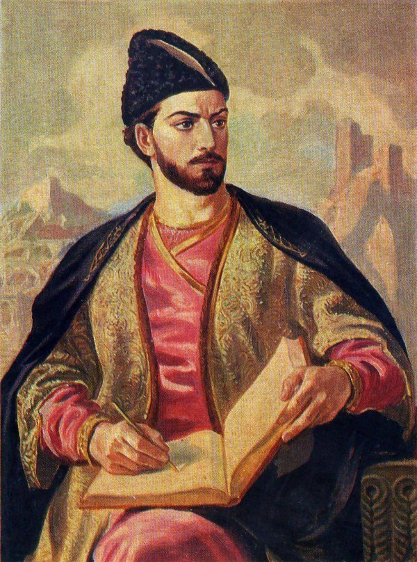

შოთა რუსთაველი, რუსთველი — XII საუკუნის დიდი ქართველი პოეტი და მოაზროვნე, ავტორი საქვეყნოდ ცნობილი პოემისა „ვეფხისტყაოსანი“. მსოფლიოს მრავალ ლიტერატურათმცოდნეთა მიერ მიიჩნევა შუასაუკუნეების მსოფლიო ლიტერატურის ერთ-ერთ უმნიშვნელოვანეს წარმომადგენლად. შოთა რუსთაველის ცხოვრებისა და მოღვაწეობის შესახებ ჩვენამდე თითქმის არავითარ ცნობას არ მოუღწევია. რიგი ისტორიული, ლიტერატურული და ფოლკლორული წყაროების საფუძველზე იქმნება დიდი პოეტის ცხოვრებისა და მოღვაწეობის არაერთი ვერსია. რუსთაველის ბიოგრაფიული მონაცემების დასადგენად ერთ-ერთი ძირითადი წყარო თვით მისი პოემაა. რუსთაველის ავტორობას გვიმოწმებს „ვეფხისტყაოსნის“პროლოგი
(„დავჯდე, რუსთველმან გავლექსე, მისთვის გულ-ლახვარსობილი“, „მე, რუსთველი, ხელობითა ვიქმ საქმესა ამა დარი“),ეპილოგი
აგრეთვე XV-XVIII საუკუნეების ქართული მწერლობა (ამაზე ადრინდელი ცნობები არ მოგვეპოვება). 